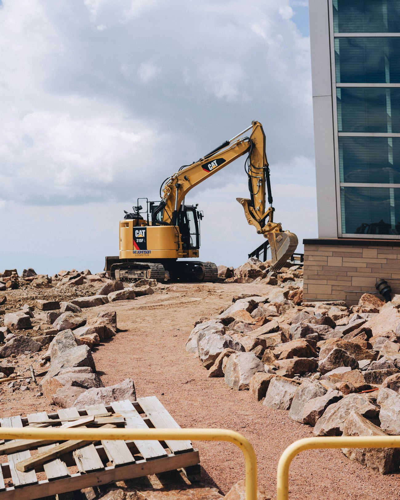
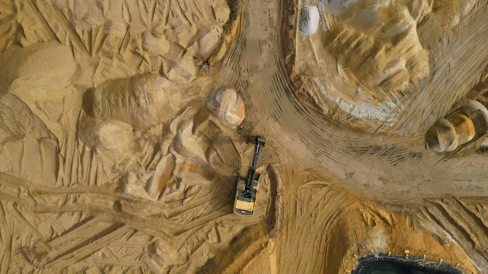
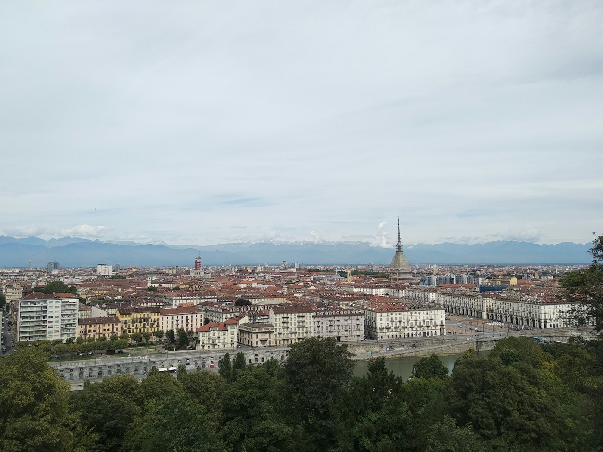

Impresa edile di famiglia · Pecetto Torinese
Dallo scavoalla casa finita,sulla collina.
Costruzioni, scavi e movimento terra a Pecetto e sulla collina di Torino. Con i nostri mezzi, dal 1992.

- Dal 1992Canonico Costruzioni S.r.l.
- Di famigliauna tradizione che continua
- Pecetto Torinesee collina di Torino
- Scavi e mezziescavatori e autocarro
01 · Servizi
Un'impresa sola, dal terreno al tetto.
Sulla collina ogni lotto è diverso: pendenze, terra, accessi stretti. Per questo facciamo noi anche scavi e trasporti, senza passare il lavoro ad altri.
- 01
Nuove costruzioni
Case, villette e ampliamenti, dalle fondazioni al tetto.
- 02
Scavi e fondazioni
Scavi di sbancamento e a sezione, platee e muri contro terra.
- 03
Movimento terra
Livellamenti, rinterri, sistemazione di terreni in pendenza.
- 04
Trasporti con autocarro
Terra, inerti e materiali da e per il cantiere, con i nostri mezzi.
02 · Lo scavo
Prima di salire, si scende.
- 01
Tracciamento
Si segna sul terreno la forma esatta della casa, a partire dal progetto.
- 02
Scavo
L'escavatore toglie terra e argilla fino al terreno buono. La terra la portiamo via noi.
- 03
Magrone e ferri
Uno strato di calcestruzzo magro pulisce il fondo, sopra si posano le armature.
- 04
Getto della fondazione
Platea e muri contro terra: la parte che non si vede e regge tutto il resto.
- 05
E poi si sale
Rinterro, struttura, tetto. Sempre la stessa impresa.
03 · Lavori
Cantieri, mezzi, terra.
Foto indicative. Qui vanno le foto dei vostri cantieri, come quelle che pubblicate su Facebook.


04 · Chi siamo
Una famiglia di costruttori, sulla collina dal 1992.
Canonico Costruzioni è un'impresa edile con sede a Pecetto Torinese, alla quale appartiene una lunga tradizione di famiglia. La società è iscritta dal 1992 e fa da sé il lavoro pesante: scavi, movimento terra, trasporti.
Conosciamo la collina: le strade strette, i terreni in pendenza, la marna che si trova scavando. Sono cose che contano quando si costruisce qui.
I nostri cantieri su Facebook- Ragione socialeCanonico Costruzioni S.r.l.
- Iscritta dal1992
- SedeStrada Valle Sauglio 4, Pecetto Torinese
- ZonaCollina di Torino e dintorni
05 · Come si parte
Si comincia guardando il terreno.
- 1
Una telefonata
Ci raccontate il lavoro e dove si trova.
- 2
Il sopralluogo
Veniamo a vedere il lotto, gli accessi, il tipo di terreno.
- 3
Il preventivo
Scritto, con lavorazioni e mezzi, prima di cominciare.
- 4
Il cantiere
Dallo scavo in poi segue tutto la stessa impresa.
06 · Contatti
Avete un terreno o un progetto? Parliamone.
- Cellulare350 079 0851
- Emailcanonicocostruzionisrl@gmail.com
- SedeStrada Valle Sauglio 4, 10020 Pecetto Torinese (TO)
- Orariapertura alle 7:30
Strada Valle Sauglio 4
10020 Pecetto Torinese, sulla collina di Torino